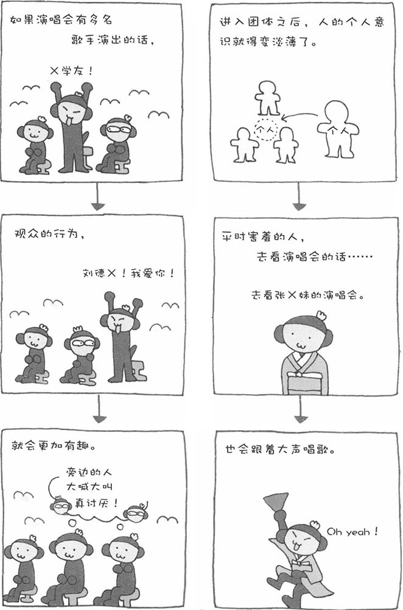

本来性格内向、羞于在人前讲话的人，看演唱会时也会跟着大声唱歌，看体育比赛时也会高声为运动员呐喊助威。同一个人在不同的状况下怎么会有这么大的变化呢？当人把自己埋没于团体之中时，个人意识会变得非常淡薄。心理学将这种现象称为"没个性化"。个人意识变淡薄之后，就不会注意到周围有人在看着自己，觉得"在这里我们可以做自己喜欢做的事情"。巨大的开放感能使自己的欲求进一步增长。反正周围也没有人认识自己，也没有人际关系的束缚，因此害羞的人在这种场合下也会大声唱歌、高声呐喊助威。此外，大声喊叫出来，也是一种释放精神压力的方法，可以使人心情舒畅。因此，有的人甚至大声喊叫上了瘾。
不过，如果这种状态持续发展下去，也存在一定的危险性。当人的自我意识过于淡薄时，就会开始感觉什么事都不是自己做的。比如狂热的足球迷，如果自我意识过于淡薄，就可能发展成危害社会的"足球流氓"。当然，"没个性化"并不会在所有情况下都能导致人丧失社会性。在保持着社会性的团体中，"没个性化"也很难使人做出反社会的行为。
心理学家金巴尔德曾以女大学生为对象进行了一项恐怖的实验。他让参加实验的女大学生对犯错的人进行惩罚。这些女大学生被分为两组，一组人胸前挂着自己的名字，而另一组人则被蒙住头，别人看不到她们的脸。由工作人员扮成犯错的人后，心理学家请参加实验的女大学生发出指示，让她们对犯错的人进行惩罚，惩罚的方法是电击。实验结果表明，蒙着头的那一组人，电击犯错者的时间更长。由此可见，有时，"没个性化"会让人变得很冷酷。
